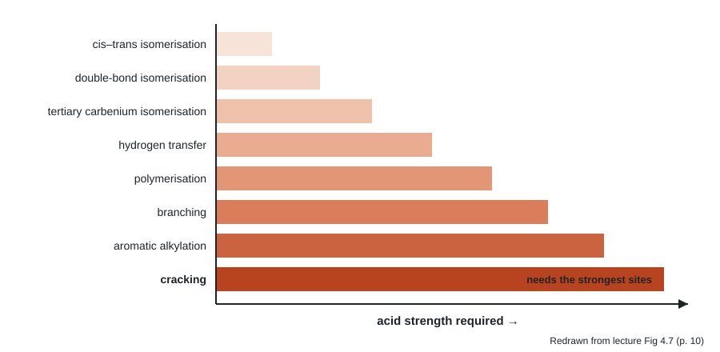
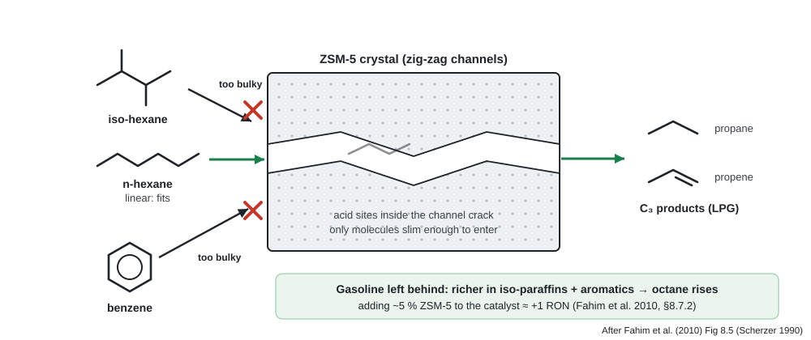

Chapter 02 · parameters
Feed, catalyst and operating conditions
All the numbers in one datasheet first, then the feed and its contaminants, then the catalyst: why it must be acidic, zeolite Y, the matrix, ZSM-5, and how it loses activity.
2.1Operating parameters
°F values from the book are converted to °C and psig to barg here Dunit conversion. "Max-gasoline case" is the 40,000 BPSD unit in Table 8.4 (Parkash, 2003).
| Parameter | Typical value | Note | Source |
|---|---|---|---|
| Reactor (riser) | |||
| Reaction temperature | 480–550 °C | High temperature needed because cracking is strongly endothermic | Bp. 208 |
| Riser outlet temperature | 991 °F ≈ 533 °C | Max-gasoline case | BTable 8.4 |
| Reactor pressure | 1–5 bar | Low, because cracking makes many more moles of product | Bp. 208 |
| Reactor pressure (case) | 30 psig ≈ 2.1 barg | Max-gasoline case | BTable 8.4 |
| Residence time in riser | 2–10 s | Lecture gives 1–4 s | Bp. 210 Lp. 13 |
| Feed preheat temperature | 316–427 °C | 600–800 °F; Table 8.4 case uses 446 °F ≈ 230 °C | Bp. 210, Table 8.4 |
| Catalyst-to-oil ratio | 5.4 | kg catalyst per kg oil, max-gasoline case | BTable 8.4 |
| Dispersion steam | 0.9 wt% of feed | Atomises the feed at the nozzles | BTable 8.4 |
| Stripping steam | 0.0213 t / t catalyst | Strips adsorbed oil off spent catalyst | BTable 8.4 |
| Regenerator and catalyst circulation | |||
| Regenerator temperature | 620–845 °C | 1150–1550 °F; controlled by air rate | Lp. 17 |
| Regenerator temperature (case) | 1341 °F ≈ 727 °C | Max-gasoline case | BTable 8.4 |
| Regenerator pressure (case) | 33 psig ≈ 2.3 barg | Slightly above the reactor | BTable 8.4 |
| Flue gas temperature (case) | 1355 °F ≈ 735 °C | BTable 8.4 | |
| Regenerated catalyst to riser | 649–760 °C | 1200–1400 °F | Bp. 210 |
| Spent catalyst to regenerator | 482–538 °C | 900–1000 °F | Bp. 211 |
| Coke left on regenerated catalyst | 0.01–0.4 wt% | Lower when coke is burned fully to CO₂ | Lp. 17 |
| Catalyst circulation (case) | 21.7 t/min | For a 40,000 BPSD feed | BTable 8.4 |
| Catalyst make-up (case) | 2.5 t/day | Replaces fines lost and keeps activity up | BTable 8.4 |
| Catalyst particles | |||
| Average particle size | ~70 µm / 75 µm | Lecture / book | Lp. 16 Bp. 208 |
| Surface area | ~800 m²/g | Zeolite powder | Bp. 208 |
2.2Feed
- Main feed: gas oil boiling between 316 and 566 °C (600–1050 °F), a mixture of aromatic, naphthenic and paraffinic molecules. Bp. 200
- Primary feeds are atmospheric and vacuum gas oils (AGO, VGO). Lp. 20
- Other possible feeds: atmospheric distillates, coker distillates, visbreaker distillates, desulphurised atmospheric residue, desulphurised and deasphalted vacuum residue. Bp. 201
- Contaminants (S, N, metals) sit mostly in the higher-boiling fractions, so feeds are normally hydrotreated first to protect the catalyst and improve yields. Bp. 201 Lp. 20
- Refiners blend atmospheric and vacuum tower bottoms into FCC feed because residual fuel is worth much less than cracking feed. Lp. 20
Typical feed properties
| Property | Desulphurised VGO | Atmospheric residue |
|---|---|---|
| Specific gravity (15/4 °C) | 0.896 | 0.889 |
| API gravity | 26.3 | 27.5 |
| Gas oil fraction (< 343 °C), wt% | 7 | 4 |
| VGO fraction (343–538 °C), wt% | 88.5 | 52.5 |
| Vacuum residue (> 538 °C), wt% | 4.5 | 43.5 |
| Conradson carbon residue, wt% | 0.2 | 4.2 |
| Sulphur, wt% | 0.4 | 0.11 |
| Nitrogen, wt% | 0.064 | 0.19 |
| Nickel, wppm | 0.26 | 17 |
| Vanadium, wppm | 0.15 | 0.5 |
Source: BTable 8.1 (Tominaga and Tamaki, 1997).
Contaminants: effect and control
| Contaminant | What it does | Control | Source |
|---|---|---|---|
| Conradson carbon (CCR) | Deposits on the catalyst as coke; can exceed the regenerator's burning capacity | Limit or hydrotreat; residue feeds need an RFCC design | Bp. 201 |
| Nickel | Increases coke and hydrogen formation (dehydrogenation) | Up to 15 ppm Ni + V: add organic antimony to passivate Ni. Coke falls up to 15 %, H₂ up to 45 % | Lp. 20 |
| Vanadium | Main cause of catalyst activity loss from metals | Above 15 ppm metals with CCR above 3 %: hydroprocess the feed | Lp. 20 |
| Nitrogen | Poisons the catalyst by neutralising its acid sites | Unit is unaffected if N is kept below 0.2 % | Bp. 201 |
| Sulphur | Ends up in H₂S, LCO, HCO and coke, then as SOₓ in flue gas | Feed hydrotreating; metal-oxide SOₓ additive in the catalyst | Bpp. 201, 209 |
| Heavy aromatics | Even small amounts crack poorly and lay down coke | Feed selection or hydrotreating | Lp. 15 |
| Organometallics | Deposit metals during feed desulphurisation | Guard reactor ahead of the desulphuriser | Bp. 201 |
2.3Catalyst
Why it must be acidic
- A cracking catalyst must supply a proton (Brønsted acid). Lewis acids (BF₃, AlCl₃, FeCl₃) can also form carbenium ions. Lpp. 10, 12
- Each acid-catalysed reaction needs a minimum acid strength. Cracking needs the strongest sites, which is why catalyst acidity sets the product slate. LFig 4.7

Three generations of cracking catalyst
- Acid-treated natural aluminosilicates (clays). Lp. 12
- Amorphous synthetic silica–alumina. Lp. 12
- Crystalline synthetic aluminosilicates: zeolites (molecular sieves). They have more active sites and more adsorption capacity, so they crack faster. Lp. 12
Zeolite Y: the active component
- Faujasite is the natural crystalline aluminosilicate; zeolite Y is its synthetic form and the usual cracking catalyst. Lp. 13
- Sodium form composition: Lp. 13
\[ (0.9 \pm 0.2)\,\mathrm{Na_2O}\cdot \mathrm{Al_2O_3}\cdot w\,\mathrm{SiO_2}\cdot x\,\mathrm{H_2O}, \qquad 3 < w < 6,\;\; x < 9 \]
- Sodium poisons cracking, so the zeolite is converted to the acid form by ion exchange with rare-earth cations. Lp. 13
Note on the lecture text
The slide lists "cesium, lanthanum". Caesium is an alkali metal, not a rare earth; the rare earths used alongside lanthanum are typically cerium and similar lanthanides.
- Largest opening in Y-faujasite is the ~8 Å supercage, which admits C₁₈–C₂₅ one-, two- and three-ring aromatics from VGO. Bp. 208
- Powder with average particle size 75 µm and surface area about 800 m²/g. Bp. 208
The matrix
Zeolite crystals are embedded in a matrix that gives the particle its body. Bp. 209
| Matrix part | Job |
|---|---|
| Binder | "Glue" that gives cohesion between zeolite particles |
| Filler (kaolin clay) | Makes up the body; with the binder, gives density and attrition resistance |
| Additives | ppm-level metal promotes CO → CO₂ combustion in the regenerator; metal oxides fix SOₓ on the catalyst, and the sulphur is released as H₂S in the reactor |
Source: B§8.7.2, p. 209
ZSM-5 additive: shape-selective octane boost

Zeolite vs amorphous silica–alumina
| Property | Amorphous SiO₂–Al₂O₃ | Zeolite |
|---|---|---|
| Activity | 1 (reference) | ~100× higher |
| Gasoline yield at same conversion | Lower | Higher |
| Gasoline octane | 2–3 numbers higher | 2–3 numbers lower |
| Coke yield | Higher | Lower |
| Dry gas (C₁–C₄) | Higher | Lower |
| Iso-butane | Lower | Higher (hydrogen transfer) |
| Gasoline composition | More olefins | More paraffins and aromatics, fewer olefins (strong H-transfer) |
Source: Lpp. 12–13. Why zeolite gives more gasoline: the large ion forms and cracks by β-scission to a smaller ion plus C₃, instead of over-cracking to gas. Lp. 13
The table prints P / A / N / O as amorphous 38 / 10 / 0.45 / 10 and zeolite 45 / 20 / 0.15 / 20. The text beneath says olefins are lower with zeolite, which contradicts the olefin column as printed. The conclusion in the text is the one to quote: fewer olefins, more paraffins and aromatics, because zeolites transfer hydrogen well (\(\ce{O + N -> P + A}\)). Lp. 13 BEq. 8.7
How the catalyst loses activity
| Cause | What happens / remedy | Source |
|---|---|---|
| Coke | Builds up during cracking; temporary, because it is burned off with air in the regenerator every cycle | Lp. 15 |
| Vanadium | Main metal cause of activity loss; hydroprocess high-metal feeds | Lp. 20 |
| Nickel | Raises coke and H₂; passivate with antimony | Lp. 20 |
| Nitrogen | Neutralises acid sites; keep N < 0.2 % | Bp. 201 |
| Overheating | Regenerator temperature is controlled carefully to avoid it | Lp. 16 |
| Attrition / fines loss | Fines leave with flue gas and slurry; fresh make-up catalyst is added (2.5 t/day in the Table 8.4 case) | Bpp. 211, 212 |